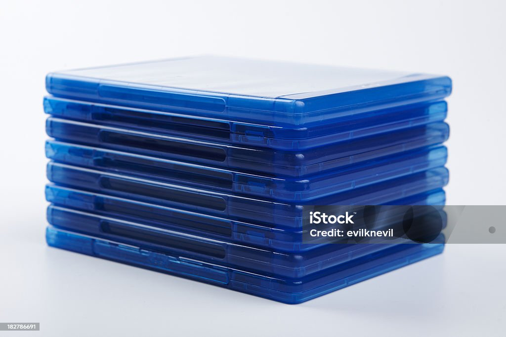
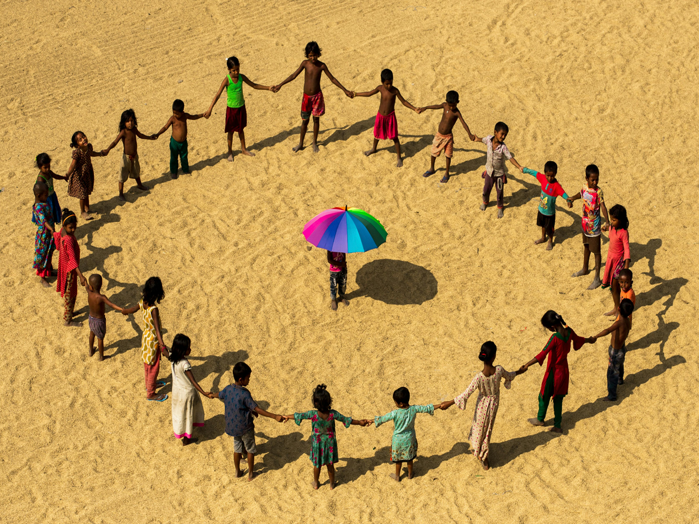

Cran is not a just another video game it is another world and you get to explore it and what not. While some people may be out hunting dragons others could be building a baked goods enterprise to pass on to their evil child, thank goodness they have that magic cricket for them. For those who perfer a more structured gameplay try out our Board Game.
We sell physical copies and cases, no download code inside the case, you get a real physical game if you buy the physical version.

The world of cran is expnasive and created by us humans. The map is not generated by ai and our work isn't copy paste from some trash. A nerdy world created by nerds, filled with secrets to find and interactions waiting for you. This expansive world is open for complete exploration, never will there be an area that can't be explored.
With such a massive game world, there are gonna be many with things to share, so join them and us as we share all our cool photos, build guides, hidden spots and so much more. Join now at location.
Only $89.99